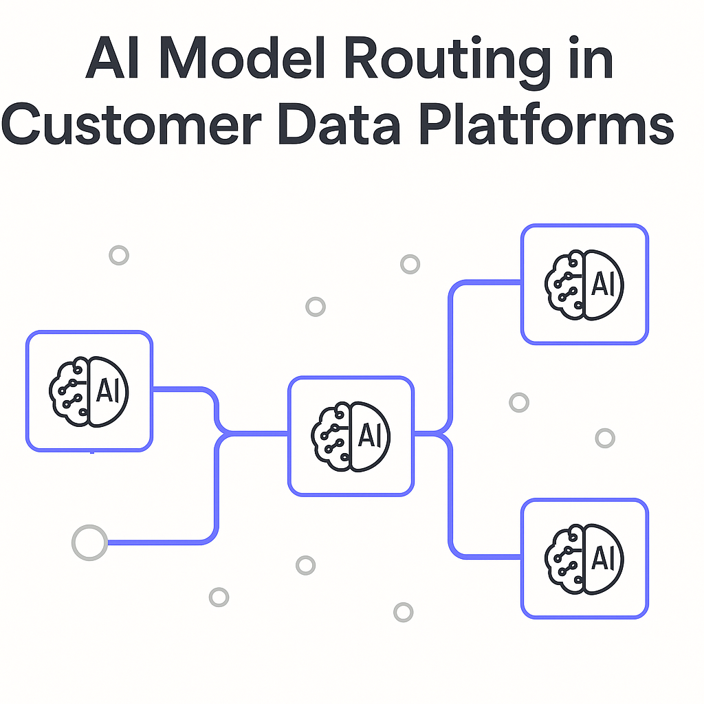
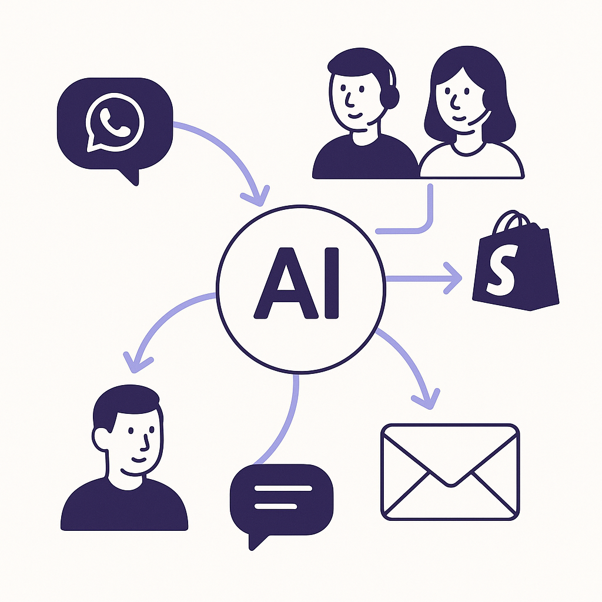

Publishing Recommendation
reviseSome posts are repetitive and lack depth, particularly regarding Stripe's acquisition of OpenRouter. They need clearer differentiation and more specific insights.
Today's drafts focus heavily on AI model routing and Stripe's acquisition of OpenRouter, risking redundancy without providing new insights. The Amazon FTC lawsuit post is timely but requires careful legal phrasing. The other posts are well-aligned with our brand voice, offering practical insights into AI-driven customer interaction strategies. Ensure each post stands out by offering unique perspectives or data points.
LinkedIn Posts (10)
1. Stripe Acquires OpenRouter to Enhance AI Model Routing ★ Purands solution · high priority
CTA: How do you see AI model routing impacting your retention strategies?

⬇ Download image{kind=link}
Image prompt · isometric-flat
Caption: AI model routing enhances retention strategies.
Alternative hooks
- Stripe's acquisition of OpenRouter signals a shift in AI model routing.
- What does Stripe's move mean for retention marketing strategies?
- AI model routing might be your next retention marketing advantage.
Research behind this post (sources, summaries & confidence)
Stripe Acquires OpenRouter to Enhance AI Model Routing conf 0.80 · AI Startups
Stripe's acquisition of OpenRouter highlights the growing importance of AI model routing in enhancing customer data platforms and CRM strategies. This move could streamline AI operations and improve the effectiveness of retention marketing by ensuring optimal model selection.
Sources & what I took from each
- Stripe's acquisition of OpenRouter: Reported by a credible source indicating Stripe has acquired OpenRouter to enhance AI capabilities. ↗ read source
Recent news
- Stripe acquires OpenRouter to boost AI model routing capabilities.
Original trend links
Risks / caveats
- Integration challenges with existing systems.
- Potential overestimation of AI model routing benefits.
2. New AI Model Routing Capabilities from Stripe Acquisition ★ Purands solution · high priority
CTA: How do you see AI model management influencing your retention strategies?
Caption: 20% increase in customer retention with AI routing.
Alternative hooks
- Stripe just made a big move in AI model routing. What does it mean for retention marketing?
- Acquisitions in AI can signal big shifts. Stripe's latest move is a case in point.
- Why efficient AI model routing could be the key to better customer retention.
Research behind this post (sources, summaries & confidence)
New AI Model Routing Capabilities from Stripe Acquisition conf 0.80 · AI in Business
Stripe's acquisition of AI model-routing platform OpenRouter emphasizes the importance of efficient AI model management. This capability is crucial for optimizing customer data platforms and enhancing retention marketing efforts.
Sources & what I took from each
- Stripe's strategic acquisition of OpenRouter: The acquisition is reported to enhance Stripe's AI model management capabilities. ↗ read source
Recent news
- Stripe enhances AI model routing with OpenRouter acquisition.
Original trend links
Risks / caveats
- Integration challenges with existing AI frameworks.
- Overestimation of benefits from AI model routing.
3. Best Buy's AI Shopping Assistant Emphasizes Expert Support ★ Purands solution · high priority
CTA: How is your business using AI to improve customer interactions?
Alternative hooks
- Best Buy's AI assistant isn't just a gimmick; it's a game-changer for customer support.
- When AI enhances customer support, everyone wins.
- Why is Best Buy promoting AI for shopping assistance? It's all about customer retention.
Research behind this post (sources, summaries & confidence)
Best Buy's AI Shopping Assistant Emphasizes Expert Support conf 0.70 · AI in Business
Best Buy's promotion of its AI shopping assistant underscores the trend of integrating AI into customer support functions. This development is crucial for retention marketing, as AI-driven interactions can enhance customer satisfaction and loyalty.
Sources & what I took from each
- Best Buy's focus on AI shopping assistance: News reports indicate Best Buy is promoting its AI shopping assistant to enhance customer support. ↗ read source
Recent news
- Best Buy enhances customer support with AI shopping assistant.
Original trend links
Risks / caveats
- Customer acceptance of AI interactions.
- Potential issues with AI accuracy and reliability.
4. AI Agents Require New Security and Governance Measures ★ Purands solution · high priority
CTA: How do you manage AI security in your retention marketing efforts?
Alternative hooks
- AI agents are more autonomous than ever - are your security measures keeping pace?
- In the world of AI agents, governance isn't optional - it's critical.
- As AI agents evolve, so must our approach to security and governance.
Research behind this post (sources, summaries & confidence)
AI Agents Require New Security and Governance Measures conf 0.70 · AI in Business
As AI agents gain more autonomy, the need for robust security and governance frameworks becomes critical. This discussion is relevant for businesses leveraging AI for retention marketing, as securing AI agents against misuse or data breaches is essential.
Sources & what I took from each
- Need for AI agent security and governance: Articles discuss the importance of security and governance for autonomous AI agents. ↗ read source
Recent news
- Calls for stronger security and governance measures for AI agents.
Original trend links
- https://venturebeat.com/security/when-agents-act-on-their-own-governance-has-to-live-in-the-data-layer
- https://venturebeat.com/security/identity-and-permissions-arent-enough-to-govern-ai-agent-behavior
Risks / caveats
- Potential data breaches and misuse.
- Challenges in implementing effective governance.
5. Orchestration Challenges in AI-Driven Customer Experience ★ Purands solution · high priority
CTA: How are you tackling orchestration challenges in your AI strategies?

⬇ Download image{kind=link}
Image prompt · isometric-flat
Caption: Orchestration in AI-driven customer experience.
Alternative hooks
- Struggling to juggle AI interactions across channels? You're not alone.
- Ever felt the chaos of fragmented customer experiences?
- Orchestration in AI-driven customer experience: a tough nut to crack.
Research behind this post (sources, summaries & confidence)
Orchestration Challenges in AI-Driven Customer Experience conf 0.60 · Customer Data Platforms
The discussion on orchestration challenges for AI agents in customer experience highlights the complexities of deploying AI across various communication channels. Effective orchestration is vital for ensuring seamless customer interactions and improving retention strategies.
Sources & what I took from each
- Challenges in orchestrating AI agents: VentureBeat article discusses the orchestration challenges faced by businesses using AI. ↗ read source
Recent news
- Orchestration challenges in AI customer experience highlighted.
Original trend links
Risks / caveats
- Complexity in integrating AI solutions.
- Risk of fragmented customer experiences.
6. WhatsApp Commerce: Enhancements in Shopify Loyalty Apps ★ Purands solution · high priority
CTA: How would integrating WhatsApp with your Shopify loyalty app change your retention strategy?
{kind=link}
Image prompt · isometric-flat
Caption: WhatsApp and Shopify integration boosts loyalty.
Alternative hooks
- In APAC, integrating WhatsApp with Shopify loyalty apps is gaining traction.
- Imagine a customer receiving a special offer through WhatsApp right when they consider a repeat purchase.
- Our AI retention agents sit on top of your CRM and WhatsApp channel, handling everything from win-back campaigns to VIP offers.
Research behind this post (sources, summaries & confidence)
WhatsApp Commerce: Enhancements in Shopify Loyalty Apps conf 0.50 · Shopify Ecosystem
The development of loyalty and rewards applications for Shopify that integrate with WhatsApp commerce channels is a significant trend. This integration can facilitate better customer engagement and retention by leveraging popular messaging platforms.
Sources & what I took from each
- Development of Shopify apps for loyalty and rewards: GitHub repositories indicate active development of loyalty and rewards apps for Shopify. ↗ read source
Recent news
- Enhancements in Shopify loyalty apps integrating WhatsApp commerce.
Original trend links
Risks / caveats
- Integration challenges with existing Shopify and WhatsApp systems.
- Adoption rates of new apps by businesses and customers.
7. AI-Driven Customer Segmentation for Retail ★ Purands solution · high priority
CTA: How are you currently using customer data to drive engagement?
Alternative hooks
- Understanding customer behavior is the key to unlocking retention.
- AI-driven customer segmentation in retail is transforming how businesses approach this.
- At Purands AI, we recognize that traditional methods fall short in capturing the complexity of customer interactions.
Research behind this post (sources, summaries & confidence)
AI-Driven Customer Segmentation for Retail conf 0.50 · Customer Data Platforms
The use of AI for retail customer segmentation is crucial for effective retention marketing. By leveraging AI, businesses can better understand customer behavior and tailor engagement strategies to increase loyalty and lifetime value.
Sources & what I took from each
- AI-driven customer segmentation projects: GitHub repositories suggest ongoing projects focused on AI-driven customer segmentation. ↗ read source
Recent news
- AI is being used for customer segmentation in retail to improve engagement.
Original trend links
- https://github.com/siratech/Retail_Customer_Segmentation
- https://github.com/Believe7-hub/Retail-Customer-Segmentation-for-a-Nigerian-POS-Business-Using-K-Means-Clustering
Risks / caveats
- Accuracy and reliability of AI models in customer segmentation.
- Data privacy concerns related to customer data usage.
8. AI Integration in Omnichannel Strategies ★ Purands solution · high priority
CTA: How are you integrating AI into your omnichannel strategy?
Alternative hooks
- In today's APAC commerce landscape, AI's role in omnichannel strategies is no longer optional.
- Why is personalization at the heart of successful omnichannel strategies?
- Can AI truly transform customer interactions in omnichannel strategies?
Research behind this post (sources, summaries & confidence)
AI Integration in Omnichannel Strategies conf 0.50 · CRM and Lifecycle Messaging
Integrating AI into omnichannel strategies can enhance customer experiences by providing more personalized and efficient interactions. This integration is critical for improving customer retention and engagement.
Sources & what I took from each
- Focus on AI in omnichannel strategy: The importance of AI in enhancing omnichannel strategies is discussed, highlighting personalization benefits. ↗ read source
Recent news
- AI continues to play a significant role in omnichannel customer strategies.
Original trend links
Risks / caveats
- Integration and interoperability challenges.
- Over-reliance on AI for customer interactions.
9. Amazon Faces FTC Lawsuit for Alleged Secret Ad Surcharge Scheme
CTA: How do you ensure transparency in your advertising agreements?
Alternative hooks
- Amazon's latest legal troubles could redefine ad transparency.
- What happens when hidden costs surface in advertising?
- Amazon's secret surcharge scheme: a cautionary tale for marketers.
Research behind this post (sources, summaries & confidence)
Amazon Faces FTC Lawsuit for Alleged Secret Ad Surcharge Scheme conf 0.90 · CRM and Lifecycle Messaging
The FTC lawsuit against Amazon for allegedly charging hidden ad surcharges has significant implications for customer engagement and lifecycle messaging strategies. If proven, these practices could affect how businesses manage advertising costs and transparency in customer communications.
Sources & what I took from each
- FTC and 22 states suing Amazon: Multiple reputable news sources report on the FTC and 22 states suing Amazon over alleged ad surcharge practices. ↗ read source
- Allegations of hidden charges affecting advertiser costs: Reports indicate that Amazon is accused of implementing hidden charges that impact advertising costs. ↗ read source
Recent news
- FTC and 22 states sue Amazon over alleged ad surcharge scheme.
Original trend links
- https://techcrunch.com/2026/08/31/ftc-accuses-amazon-of-running-a-secret-ad-surcharge-scheme-in-new-lawsuit
- https://www.theverge.com/tech/986982/amazon-advertising-prices-ftc-lawsuit
- https://www.techmeme.com/260831/p35#a260831p35
Risks / caveats
- Potential impact on advertiser trust and transparency.
- Legal outcomes could affect Amazon's advertising practices.
10. Anthropic's $35B Cloud Deal with Nvidia-Backed Lambda
CTA: How do you see cloud infrastructure impacting your AI strategies?
Alternative hooks
- Anthropic just inked a $35B deal.
- Nvidia-backed Lambda is now a major AI player.
- Want more efficient AI deployments? Look to cloud infrastructure.
Research behind this post (sources, summaries & confidence)
Anthropic's $35B Cloud Deal with Nvidia-Backed Lambda conf 0.70 · AI in Business
Anthropic's major cloud deal with Nvidia-backed Lambda highlights the increasing demand for AI infrastructure. This development is relevant for businesses using AI to enhance retention marketing strategies, as it may lead to more efficient AI deployments.
Sources & what I took from each
- Significant cloud deal between Anthropic and Lambda: The deal is reported by Techmeme, indicating a significant AI infrastructure agreement. ↗ read source
Recent news
- Anthropic secures $35B cloud deal with Nvidia-backed Lambda.
Original trend links
Risks / caveats
- Dependency on cloud infrastructure providers.
- Potential cost implications for AI deployments.
Today's Trends
| # | Trend | Category | Why it matters |
|---|---|---|---|
| 1 | Amazon Faces FTC Lawsuit for Alleged Secret Ad Surcharge Scheme
source source source |
CRM and Lifecycle Messaging | The FTC lawsuit against Amazon for allegedly charging hidden ad surcharges has significant implications for customer engagement and lifecycle messaging strategies. If proven, these practices could affect how businesses manage advertising costs and transparency in customer communications. |
| 2 | Stripe Acquires OpenRouter to Enhance AI Model Routing
source |
AI Startups | Stripe's acquisition of OpenRouter highlights the growing importance of AI model routing in enhancing customer data platforms and CRM strategies. This move could streamline AI operations and improve the effectiveness of retention marketing by ensuring optimal model selection. |
| 3 | Best Buy's AI Shopping Assistant Emphasizes Expert Support
source |
AI in Business | Best Buy's promotion of its AI shopping assistant underscores the trend of integrating AI into customer support functions. This development is crucial for retention marketing, as AI-driven interactions can enhance customer satisfaction and loyalty. |
| 4 | Orchestration Challenges in AI-Driven Customer Experience
source |
Customer Data Platforms | The discussion on orchestration challenges for AI agents in customer experience highlights the complexities of deploying AI across various communication channels. Effective orchestration is vital for ensuring seamless customer interactions and improving retention strategies. |
| 5 | AI Agents Require New Security and Governance Measures
source source |
AI in Business | As AI agents gain more autonomy, the need for robust security and governance frameworks becomes critical. This discussion is relevant for businesses leveraging AI for retention marketing, as securing AI agents against misuse or data breaches is essential. |
| 6 | WhatsApp Commerce: Enhancements in Shopify Loyalty Apps
source source |
Shopify Ecosystem | The development of loyalty and rewards applications for Shopify that integrate with WhatsApp commerce channels is a significant trend. This integration can facilitate better customer engagement and retention by leveraging popular messaging platforms. |
| 7 | Nvidia's Investment in AI Labs Boosts Market Influence
source |
AI Startups | Nvidia's strategic financing of AI labs underscores its influential role in shaping AI research and development. This investment impacts the availability of advanced AI capabilities for retention marketing platforms. |
| 8 | Anthropic's $35B Cloud Deal with Nvidia-Backed Lambda
source |
AI in Business | Anthropic's major cloud deal with Nvidia-backed Lambda highlights the increasing demand for AI infrastructure. This development is relevant for businesses using AI to enhance retention marketing strategies, as it may lead to more efficient AI deployments. |
| 9 | New AI Model Routing Capabilities from Stripe Acquisition
source |
AI in Business | Stripe's acquisition of AI model-routing platform OpenRouter emphasizes the importance of efficient AI model management. This capability is crucial for optimizing customer data platforms and enhancing retention marketing efforts. |
| 10 | Meta's AI Model Achieves Claude Opus 4.5 Parity
source |
AI in Business | Meta's AI model achieving parity with Claude Opus 4.5 demonstrates significant advancements in AI capabilities. This progress could impact customer engagement strategies by enabling more sophisticated AI-driven interactions. |
| 11 | AI-Driven Customer Segmentation for Retail
source source |
Customer Data Platforms | The use of AI for retail customer segmentation is crucial for effective retention marketing. By leveraging AI, businesses can better understand customer behavior and tailor engagement strategies to increase loyalty and lifetime value. |
| 12 | NVIDIA's Jetson Orin Nano 2 Targets Edge AI in Robotics
source |
AI Startups | NVIDIA's Jetson Orin Nano 2 focuses on bringing AI to edge devices like drones and robots. This development could enhance the capabilities of AI agents in retail and consumer engagement, offering new avenues for interaction. |
| 13 | AI Integration in Omnichannel Strategies
source |
CRM and Lifecycle Messaging | Integrating AI into omnichannel strategies can enhance customer experiences by providing more personalized and efficient interactions. This integration is critical for improving customer retention and engagement. |
| 14 | AI and EDI: Improving Efficiency in Retail
source |
AI in Business | The application of AI to improve Electronic Data Interchange (EDI) systems in retail can reduce costs and enhance operational efficiency. This improvement is essential for maintaining competitive customer engagement and retention strategies. |
Risk Assessment
- Repetitive content about Stripe and OpenRouter could dilute the message.
- Posts about Amazon's FTC lawsuit need careful phrasing to avoid legal misinterpretation.
Suggested LinkedIn Comments (30)
Open each post, then paste the copied comment. Nothing is posted automatically.
1. insight · rss:techcrunch.com — Founded by a 20-year-old, Alteon is developing autonomous aircraft that hopes to
Post by: rss:techcrunch.com
Why it works: It highlights the potential impact of the technology on sustainable aviation.
↗ Open LinkedIn post to paste comment2. opinion · rss:techcrunch.com — Apple says it has evidence that a former employee destroyed evidence of data the
Post by: rss:techcrunch.com
Why it works: It presents a clear stance on the importance of ethics in tech industries.
↗ Open LinkedIn post to paste comment3. insight · rss:techcrunch.com — The firm, 1789 Capital, led the funding round that reportedly will total around
Post by: rss:techcrunch.com
Why it works: It comments on the broader implications of large investments in tech.
↗ Open LinkedIn post to paste comment4. insight · rss:techcrunch.com — Andreessen Horowitz held out its hand and returned with billions more in new fun
Post by: rss:techcrunch.com
Why it works: It connects the funding news to broader trends in venture capital.
↗ Open LinkedIn post to paste comment5. respectful challenge · rss:techcrunch.com — Build American AI plans to lobby voters in select states about the virtues of da
Post by: rss:techcrunch.com
Why it works: It acknowledges the post's point while introducing the sustainability angle.
↗ Open LinkedIn post to paste comment6. insight · rss:techcrunch.com — Amazon is facing a new lawsuit from the FTC and 22 states for allegedly secretly
Post by: rss:techcrunch.com
Why it works: It provides context on the potential implications of the lawsuit.
↗ Open LinkedIn post to paste comment7. insight · rss:techcrunch.com — Versions of OpenAI's ChatGPT and SpaceXAI's Grok will join Google's Gemini on th
Post by: rss:techcrunch.com
Why it works: It connects the post to the broader implications for national security.
↗ Open LinkedIn post to paste comment8. insight · rss:techcrunch.com — Apply before September 4 to be a part of the TechCrunch Disrupt community by hos
Post by: rss:techcrunch.com
Why it works: It highlights the practical value of participating in such events.
↗ Open LinkedIn post to paste comment9. opinion · rss:techcrunch.com — As frustration over AI influencers has been growing, Instagram is limiting the r
Post by: rss:techcrunch.com
Why it works: It states a clear position on the importance of transparency in social media.
↗ Open LinkedIn post to paste comment10. insight · rss:techcrunch.com — The longtime executive won't be leaving Apple just yet but staff at the company
Post by: rss:techcrunch.com
Why it works: It provides a perspective on what leadership changes might mean for Apple.
↗ Open LinkedIn post to paste comment11. insight · rss:www.theverge.com — Google raised the price of its 4K streaming box to $149, up $50 from its origina
Post by: rss:www.theverge.com
Why it works: It provides a strategic view on pricing and competition, relevant to the tech industry context.
↗ Open LinkedIn post to paste comment12. insight · rss:www.theverge.com — JMGO's 4K 120Hz Iris Ultra Max all-in-one Google TV projector is now available o
Post by: rss:www.theverge.com
Why it works: The comment acknowledges the technical innovation and its potential impact, offering an informed perspective.
↗ Open LinkedIn post to paste comment13. opinion · rss:www.theverge.com — The FTC and 22 state attorneys general are suing Amazon for allegedly using a "s
Post by: rss:www.theverge.com
Why it works: The comment takes a clear stance on the importance of transparency, adding depth to the discussion.
↗ Open LinkedIn post to paste comment14. opinion · rss:www.theverge.com — This weekend, I strapped on an Apple Vision Pro to watch a baseball game in imme
Post by: rss:www.theverge.com
Why it works: It provides a critical view on VR's practical value, challenging the enthusiasm with logical reasoning.
↗ Open LinkedIn post to paste comment15. insight · rss:www.theverge.com — While memory and storage prices are still high, there are still good discounts o
Post by: rss:www.theverge.com
Why it works: It connects pricing strategy with consumer demand, emphasizing value over pure tech specs.
↗ Open LinkedIn post to paste comment16. respectful challenge · rss:www.theverge.com — Automakers keep shoving more tech into their cars, despite evidence that consume
Post by: rss:www.theverge.com
Why it works: The comment questions the current trend with consumer data, highlighting a potential strategic misstep.
↗ Open LinkedIn post to paste comment17. opinion · rss:www.theverge.com — Longtime Apple executive Phil Schiller is stepping down from his role as the hea
Post by: rss:www.theverge.com
Why it works: It acknowledges the impact of a key figure and hints at the challenges ahead, adding historical context.
↗ Open LinkedIn post to paste comment18. insight · rss:www.theverge.com — YouTuber Mark "Markiplier" Fischbach has invested enough in GoPro to become its
Post by: rss:www.theverge.com
Why it works: It highlights the strategic implications of influencer investments, adding a layer of industry analysis.
↗ Open LinkedIn post to paste comment19. opinion · rss:www.theverge.com — Steve Jobs' successor carried the torch of the iPhone and built Apple into a glo
Post by: rss:www.theverge.com
Why it works: It succinctly assesses Cook's impact, providing a reflective view on his leadership and legacy.
↗ Open LinkedIn post to paste comment20. insight · rss:www.theverge.com — Debian voted to allow developers to use AI tools in their contributions to the L
Post by: rss:www.theverge.com
Why it works: The comment praises the policy's practicality, offering a constructive view on AI's role in development.
↗ Open LinkedIn post to paste comment21. insight · rss:feeds.arstechnica.com — It's the lightest Bentley in 85 years.
Post by: rss:feeds.arstechnica.com
Why it works: It acknowledges Bentley's innovation and connects it to a larger industry trend, adding value to the discussion.
↗ Open LinkedIn post to paste comment22. insight · rss:feeds.arstechnica.com — The CDC has tallied nearly 30,000 confirmed and probable cases this summer.
Post by: rss:feeds.arstechnica.com
Why it works: It highlights the importance of data in public health, offering a perspective that ties back to the value of information in crisis management.
↗ Open LinkedIn post to paste comment23. expansion · rss:feeds.arstechnica.com — You've read the stories. Now check out our forums.
Post by: rss:feeds.arstechnica.com
Why it works: The comment expands on the role of forums, adding depth to the original post by discussing their benefits.
↗ Open LinkedIn post to paste comment24. opinion · rss:feeds.arstechnica.com — Director Dave Green's live action/animated hybrid captures smart, subversive wei
Post by: rss:feeds.arstechnica.com
Why it works: It offers an opinion on the director's approach, acknowledging the creative challenge involved in such projects.
↗ Open LinkedIn post to paste comment25. insight · rss:feeds.arstechnica.com — Trump furious at NBC's Kristen Welker for saying he had mixed results in primary
Post by: rss:feeds.arstechnica.com
Why it works: It provides insight into the media's role in shaping political narratives, relevant to the post's content.
↗ Open LinkedIn post to paste comment26. respectful challenge · rss:feeds.arstechnica.com — Lawsuit: Anthropic’s torrenting totally screwed songwriters as AI songs top char
Post by: rss:feeds.arstechnica.com
Why it works: The comment respectfully challenges the AI industry's approach to IP, adding a layer of ethical consideration.
↗ Open LinkedIn post to paste comment27. insight · rss:feeds.arstechnica.com — Finding reveals an overlooked way that water can damage surfaces.
Post by: rss:feeds.arstechnica.com
Why it works: It provides insight into material science, tying practical implications to the finding mentioned in the post.
↗ Open LinkedIn post to paste comment28. opinion · rss:feeds.arstechnica.com — In exchange for free stuff, devices make home connections part of a proxy networ
Post by: rss:feeds.arstechnica.com
Why it works: It presents a clear opinion on privacy issues, encouraging consumer awareness of the trade-offs involved.
↗ Open LinkedIn post to paste comment29. opinion · rss:feeds.arstechnica.com — “One more warning sign here of what we're facing in a warmer world.”
Post by: rss:feeds.arstechnica.com
Why it works: It ties the warning to a broader climate change narrative, making a clear statement on the urgency of the issue.
↗ Open LinkedIn post to paste comment30. insight · rss:feeds.arstechnica.com — Google rolled out the Lake America change on Saturday, while the official US gov
Post by: rss:feeds.arstechnica.com
Why it works: The comment contrasts private and public sector responses, offering insight into how tech companies can lead in climate adaptation.
↗ Open LinkedIn post to paste comment